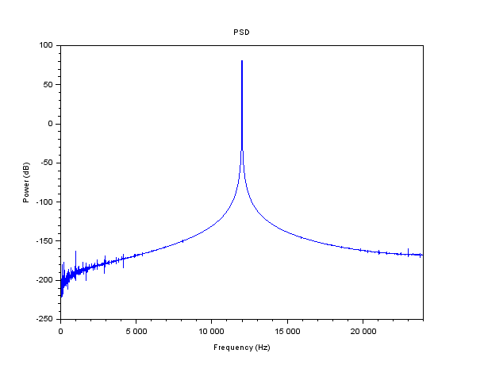
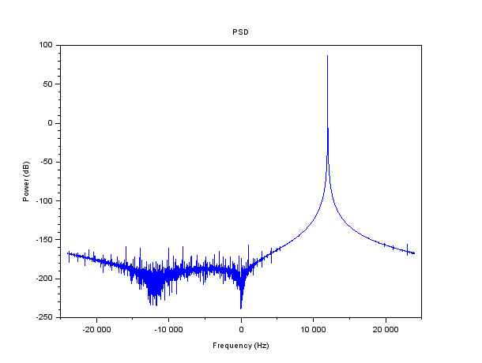
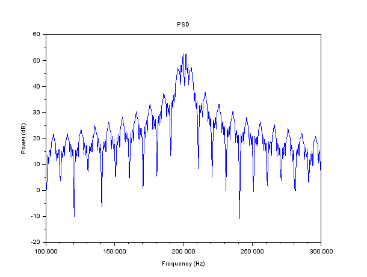

Calling Sequence
plot_psd(x);
plot_psd(x,fs[,opt]);
plot_psd(x,fs[,opt],fmin,fmax);
plot_psd(x,fs[,opt],fmin,fmax,nwin);
Description
Plot power versus frequency. If the input signal is real, then only
the positive frequencies are plotted. Otherwise (complex signal), both
positive and negative frequencies are displayed.
Note that this function compute the PSD in a very simple way: it just apply a Hann window before doing the DFT. So, it is just a convenience function to have a quick view at the spectrum of a signal. For more advanced PSD, see the cspect, pspect, ... native functions of SCILAB.
Example 1 : PSD of a real signal (pure sinusoid)
fs = 48e3; f = 12e3;
t = (0:1/fs:1)';
x = sin(2*%pi*f*t);
clf(); plot_psd(x,fs); |  |  | |

Example 2 : PSD of a complex signal (pure exponential)
fs = 48e3; f = 12e3;
t = (0:1/fs:1)';
x = exp(2*%pi*%i*f*t);
clf(); plot_psd(x,fs); | | | |

Example 3 : PSD of a BPSK signal (with zooming)
x = sct_test_signal1();
plot_psd(x,fs=1e6,fmin=100e3,fmax=300e3); | | | |
